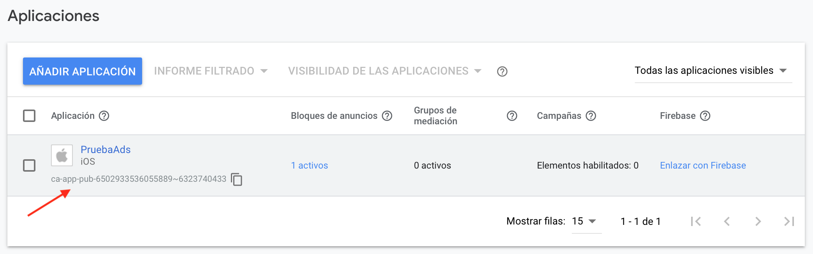
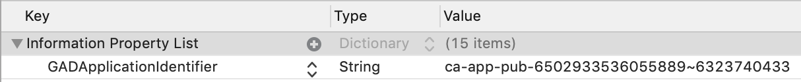

Anuncios y compras In-App¶
Anuncios¶
Redes de anuncios¶
 x
x
Hasta 2016 Apple había explotado iAD, una red de anuncios propia, con su propia API, orientada específicamente a apps iOS. Durante varios años había intentado competir con las redes más populares como AdMob (Google). Al final no consiguió destacar y la red se cerró en junio de 2016.
Desde entonces los desarrolladores iOS tienen que escoger entre distintas redes existentes:
- AdMob (Google)
- Unity Ads
- Facebook Ads
- Amazon Ads
Cada red tiene su propia API, aunque son todas ellas muy similares.
API de AdMob¶
Vamos a ver la red AdMob de Google, por ser la más popular. Vamos a explicar AdMob sin Firebase, para hacer más ligera la app y tener que depender del número mínimo de librerías.

Alta en AdMob¶
Lo primero que tenemos que hacer para probar los anuncios y el API de AdMob es crear una cuenta de AdMob y registrar una aplicación.
Una vez dado de alta y creada la aplicación, tendrás un número de
registro de la aplicación del estilo ca-app-pub-6502933536055889~6323740433
Puedes encontrar tu ID de aplicación en la interfaz de AdMob.

Importar el SDK de anuncios para móviles¶
La forma más sencilla de importar el SDK a un proyecto iOS es mediante CocoaPods.
Utilizando la instalación de Ruby que viene por defecto en MacOS para instalar CocoaPods basta con hacer:
$ sudo gem install cocoapods
Supongamos que vamos a trabajar con la app ToDoList. En el directorio
raíz del proyecto debes crear el fichero Podfile, con el contenido:
target 'ToDoList' do
pod 'Google-Mobile-Ads-SDK'
end
Después, desde línea de comando y estando en el directorio raíz del proyecto, debes ejecutar:
$ pod install --repo-update
Se descargarán las librerías necesarias y se creará un fichero
ToDoList.xcworkspace que es el que debes abrir con Xcode. Al abrir
este fichero Xcode abrirá una configuración de workspace en la que
pueden existir más de un proyecto. Es la configuración que se usa para
trabajar con CocoaPods.
Actualizar el fichero Info.plist¶
Añade una clave GADApplicationIdentifier con un valor de cadena igual
a tu ID de aplicación de AdMob al archivo Info.plist de tu
aplicación. Puedes encontrar tu ID de la aplicación en la interfaz de
AdMob.
Puedes hacerlo editando el fichero:
<key>GADApplicationIdentifier</key>
<string>ca-app-pub-6502933536055889~6323740433</string>
O usando la interfaz de Xcode:

Inicialización del API¶
Antes de cargar anuncios, debemos inicializar el SDK de
anuncios de Google para móviles llamando al método
start(ompletionHandler:) de GADMobileAds.sharedInstance(), que
inicializa el SDK y hace una retrollamada al controlador de
finalización una vez que la inicialización se ha completado, o bien
después de un tiempo de espera de 30 segundos.
Solo es necesario hacerlo una vez, preferiblemente al iniciar la aplicación. La llamada debe realizarse lo más pronto posible.
A continuación, tienes un ejemplo de cómo llamar al método startWithCompletionHandler: en tu AppDelegate:
Ejemplo de AppDelegate.swift (fragmento)
import GoogleMobileAds
@UIApplicationMain
class AppDelegate: UIResponder, UIApplicationDelegate {
func application(_ application: UIApplication,
didFinishLaunchingWithOptions launchOptions:
[UIApplication.LaunchOptionsKey: Any]?) -> Bool {
// Override point for customization after application launch.
GADMobileAds.sharedInstance().start(completionHandler: nil)
return true
}
}
Selección del formato de anuncio¶
Tras importar e inicializar el SDK de anuncios para móviles, podemos descargar un anuncio. AdMob ofrece diversos formatos de anuncios, y debemos elegir uno de ellos, el que mejor se ajuste a la experiencia de los usuarios de nuesra aplicación.
Dos de los más usados son de tipo banner y de tipo interstiticial.
Banner
Los anuncios de banner son anuncios rectangulares de imagen o de texto que ocupan parte de la pantalla de una aplicación. Permanecen en pantalla mientras los usuarios interactúan con la aplicación y pueden actualizarse automáticamente después de un cierto periodo de tiempo. Si es la primera vez que utilizamos la publicidad para móviles, son un excelente punto de partida.
Existen distintos tamaños de banners, que podemos seleccionar con su identificador:
| Tamaño | Descripción | Disponibilidad | Identificador |
|---|---|---|---|
| 320x50 | Banner | Teléfonos y tablets | kGADAdSizeBanner |
| 320x100 | Banner grande | Teléfonos y tablets | kGADAdSizeLargeBanner |
| 300x250 | Rectángulo mediano | Teléfonos y tablets | kGADAdSizeMediumRectangle |
| 468x60 | Banner de tamaño completo | Tablets | kGADAdSizeFullBanner |
| 728x90 | Leaderboard | Tablets | kGADAdSizeLeaderboard |
Intersticial
Los intersticiales son anuncios que ocupan toda la pantalla y cubren la interfaz de una aplicación hasta que el usuario los cierra. El mejor momento para usarlos son las pausas naturales de una aplicación. Por ejemplo, al pasar de un nivel a otro en un juego o después de completar una tarea.
Veamos el código para implementar un anuncio de cada uno de estos tipos.
Implementación de un banner¶
Cuando probemos las aplicaciones debemos usar siempre anuncios de prueba en lugar de anuncios reales. De lo contrario, Google podría suspender nuestra cuenta de AdMob.
La forma más sencilla de cargar anuncios de prueba es mediante el ID
de bloque de anuncios de prueba que Google ha creado para banners de iOS:
ca-app-pub-3940256099942544/2934735716.
Cuando publiquemos la app sólo hay que sustituir este ID por el ID real.
Los anuncios de banner se muestran en objetos GADBannerView, por lo
que lo primero que debemos hacer para integrarlos es incluir un objeto
GADBannerView en nuestra jerarquía de vistas.
Debemos actualizar las propiedades de este objeto:
rootViewController: controlador de vistas que se utiliza para mostrar una superposición cuando se hace clic en el anuncio. Como valor, normalmente se le da el controlador que contiene elGADBannerView.adUnitID: el objeto GADBannerView debe cargar anuncios procedentes de este ID de bloque de anuncios.delegate: delegado que implementa el protocoloGADBannerViewDelegateque define las funciones en las que se reciben los eventos del ciclo de vida de los anuncios.
Tras configurar el GADBannerView y sus propiedades podemos cargar un
anuncio. Para ello, se llama al método loadRequest pasando un objeto
GADRequest.
Por ejemplo, el siguiente código crea un objeto GADBannerView de
tamaño 320x50 e inicializa las propiedades anteriores:
import UIKit
import GoogleMobileAds
class ViewController: UIViewController, GADBannerViewDelegate {
var bannerView: GADBannerView!
override func viewDidLoad() {
super.viewDidLoad()
bannerView = GADBannerView(adSize: kGADAdSizeBanner)
bannerView.adUnitID = "ca-app-pub-3940256099942544/2934735716"
bannerView.rootViewController = self
bannerView.load(GADRequest())
bannerView.delegate = self
}
...
}
En el siguiente método addBannerViewToView(_:) se añade la vista del
anuncio, alineándose con la parte inferior del área segura de
pantalla:
func addBannerViewToView(_ bannerView: GADBannerView) {
bannerView.translatesAutoresizingMaskIntoConstraints = false
view.addSubview(bannerView)
view.addConstraints(
[NSLayoutConstraint(item: bannerView,
attribute: .bottom,
relatedBy: .equal,
toItem: view.safeAreaLayoutGuide,
attribute: .bottom,
multiplier: 1,
constant: 0),
NSLayoutConstraint(item: bannerView,
attribute: .centerX,
relatedBy: .equal,
toItem: view,
attribute: .centerX,
multiplier: 1,
constant: 0)
])
}
Por último, es recomendable realizar la llamada a la función anterior
que incorpora el GADBannerView a la jerarquía de vistas después de
haber recibido un anuncio. Para ello, se usa la función del delegado
adViewDidReceiveAd:
/// Tells the delegate an ad request loaded an ad.
func adViewDidReceiveAd(_ bannerView: GADBannerView) {
print("adViewDidReceiveAd")
addBannerViewToView(bannerView)
}
Podemos implementar el resto de funciones del delegado, con sentencias
print para depurar cuando se produce cada evento:
/// Tells the delegate an ad request failed.
func adView(_ bannerView: GADBannerView,
didFailToReceiveAdWithError error: GADRequestError) {
print("adView:didFailToReceiveAdWithError: \(error.localizedDescription)")
}
/// Tells the delegate that a full-screen view will be presented in response
/// to the user clicking on an ad.
func adViewWillPresentScreen(_ bannerView: GADBannerView) {
print("adViewWillPresentScreen")
}
/// Tells the delegate that the full-screen view will be dismissed.
func adViewWillDismissScreen(_ bannerView: GADBannerView) {
print("adViewWillDismissScreen")
}
/// Tells the delegate that the full-screen view has been dismissed.
func adViewDidDismissScreen(_ bannerView: GADBannerView) {
print("adViewDidDismissScreen")
}
/// Tells the delegate that a user click will open another app (such as
/// the App Store), backgrounding the current app.
func adViewWillLeaveApplication(_ bannerView: GADBannerView) {
print("adViewWillLeaveApplication")
}
Implementación de un interstitial¶
Los anuncios intersticiales los solicitan y muestran los objetos
GADInterstitial.
Debemos crear una instancia y asignar el ID de su bloque de anuncios.
Podemos cargar anuncios de prueba de tipo Interstitial usando el ID
ca-app-pub-3940256099942544/4411468910.
Por ejemplo, aquí se muestra cómo crear un GADInterstitial en el
método viewDidLoad de un UIViewController. Hacemos también que el
interstitial lance una petición para cargar una anuncio, y definimos
como delegado el view controller. Para ello el view controller
debe cumplir el protocolo GADInterstitialDelegate.
import UIKit
import GoogleMobileAds
class ViewController: UIViewController, GADInterstitialDelegate {
var interstitial: GADInterstitial!
override func viewDidLoad() {
super.viewDidLoad()
// Do any additional setup after loading the view.
interstitial = GADInterstitial(adUnitID: "ca-app-pub-3940256099942544/4411468910")
interstitial.load(GADRequest())
interstitial.delegate = self
}
...
}
GADInterstitial es un objeto de un solo uso que, al cargarse, muestra
un anuncio intersticial. Para que una aplicación muestre varios
anuncios intersticiales, es necesario crear un GADInterstitial para
cada uno de ellos (lo veremos más adelante).
Para mostrar un intersticial, podemos verificar la propiedad isReady en
GADInterstitial para asegurarnos de que ha terminado de cargarse y,
después, debemos llamar a presentFromRootViewController pasándole el
view controller actual como view controller raíz:
...
if interstitial.isReady {
interstitial.present(fromRootViewController: self)
} else {
print("El anuncio no está disponible")
}
}
Al igual que hacíamos en el banner podemos realizar esta llamada en
la función del delegado interstitialDidReceiveAd:
/// Tells the delegate an ad request succeeded.
func interstitialDidReceiveAd(_ ad: GADInterstitial) {
print("interstitialDidReceiveAd")
interstitial.present(fromRootViewController: self)
}
El resto de funciones del delegado son las siguientes:
/// Tells the delegate an ad request failed.
func interstitial(_ ad: GADInterstitial, didFailToReceiveAdWithError error: GADRequestError) {
print("interstitial:didFailToReceiveAdWithError: \(error.localizedDescription)")
}
/// Tells the delegate that an interstitial will be presented.
func interstitialWillPresentScreen(_ ad: GADInterstitial) {
print("interstitialWillPresentScreen")
}
/// Tells the delegate the interstitial is to be animated off the screen.
func interstitialWillDismissScreen(_ ad: GADInterstitial) {
print("interstitialWillDismissScreen")
}
/// Tells the delegate the interstitial had been animated off the screen.
func interstitialDidDismissScreen(_ ad: GADInterstitial) {
print("interstitialDidDismissScreen")
}
/// Tells the delegate that a user click will open another app
/// (such as the App Store), backgrounding the current app.
func interstitialWillLeaveApplication(_ ad: GADInterstitial) {
print("interstitialWillLeaveApplication")
}
Tal y como hemos comentado el GADInterstitial es un objeto de un
solo uso. Eso significa que una vez que se muestra un intersticial,
hasBeenUsed devuelve el valor true y el intersticial no se puede usar
para cargar otro anuncio.
Para solicitar otro, deberemos crear un nuevo objeto
GADInterstitial. Si intentamos reutilizar un objeto intersticial,
aparecerá el mensaje "Request Error: Will not send request because
interstitial object has been used"
El mejor lugar para asignar otro intersticial es en el método
interstitialDidDismissScreen del delegado GADInterstitialDelegate,
para que el siguiente intersticial comience a cargarse tan pronto como
se cierre el anterior.
Podemos refactorizar la creación del interstiticial en una función
aparte, y llamar a esa función desde viewDidLoad y desde
interstitialDidDismissScreen:
override func viewDidLoad() {
super.viewDidLoad()
interstitial = createAndLoadInterstitial()
}
func createAndLoadInterstitial() -> GADInterstitial {
var interstitial = GADInterstitial(adUnitID: "ca-app-pub-3940256099942544/4411468910")
interstitial.delegate = self
interstitial.load(GADRequest())
return interstitial
}
func interstitialDidDismissScreen(_ ad: GADInterstitial) {
interstitial = createAndLoadInterstitial()
}
Demo: Aplicación de prueba¶
Puedes descargarte una aplicación de prueba en la que se muestra el funcionamiento básico de AdMob.


Se debe ejecutar la app en un dispositivo real, ya que AdMob no
funciona en el simulador. También debes darte de alta en AdMob, registrar
una aplicación e incluir el número de registro en el fichero Info.plist.